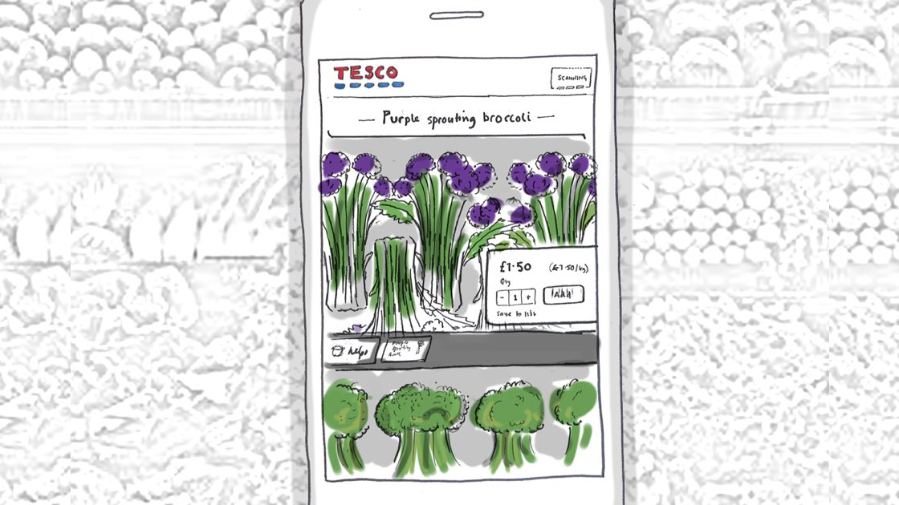
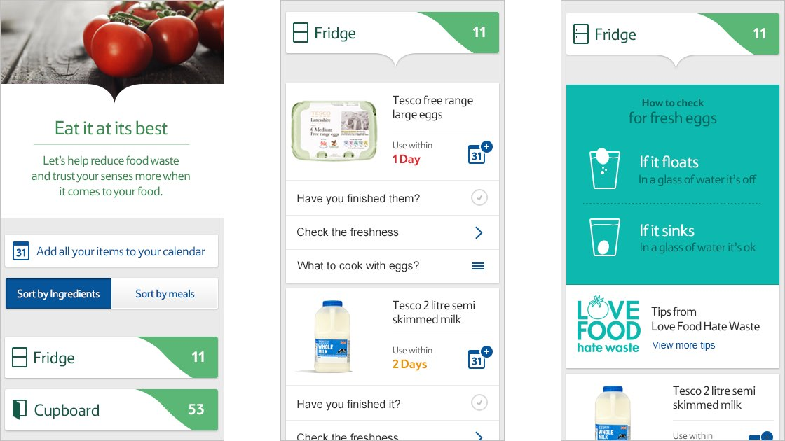
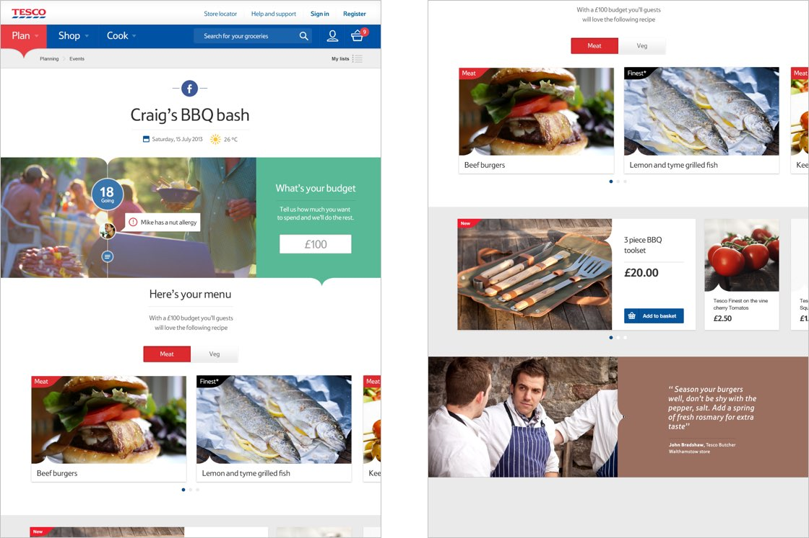
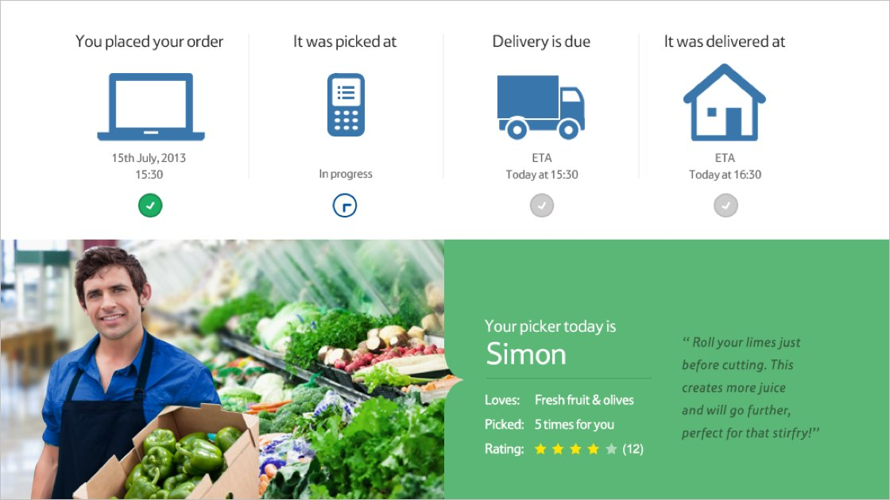

Tesco
Plan. Shop. Cook. How Tesco could lead on service innovation.
Overview
The project showcased how Tesco could use digital channels to make online grocery shopping a service for better living, for both existing customers and attracting new customers, through freshness, quality and service innovation.
Working collaboratively with the client and a small design led team enabled this project to be delivered within two weeks.







